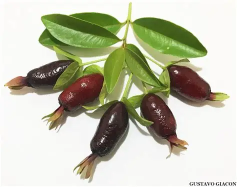
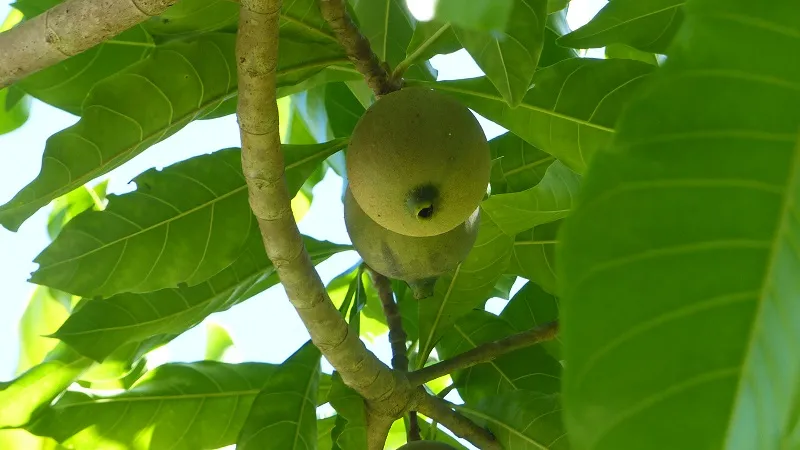
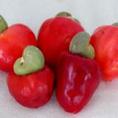

Cereja do cerrado

planta arbustiva Nativa do Cerrado brasileiro,frutos grandes e compridos
Atualizado em .

planta arbustiva Nativa do Cerrado brasileiro,frutos grandes e compridos
Atualizado em .

árvore Nativa da Floresta Amazonica, mas presente no cerrado, frutos grandes e redondo
Atualizado em .

planta arbustiva Nativa do Cerrado Brasileiropequeno pseudofruto claviforme
Atualizado em .
| Fruta | tamanho | origem |
|---|---|---|
| Cereja-do-Cerrado | 2m | arbustivo |
| Jenipapo | 15m | arvore |
| Cajuzingo-do-Cerrado | 80cm | arbustivo |